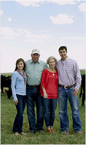

Cows are bred and calves are born and raised every year on cow-calf farms and ranches, spending time grazing on grass pastures within sight
of their mothers.
Beef calves are weaned away from their mothers between 6-8 months of age. At this point, calves either stay on a cow-calf ranch continuing a diet of grass, called grass finishing, or begin a balanced diet that includes grains and eventually go to a feedyard to be grain finished.
Tuesday, November 8, 2011
Rounding up the cow herd takes lots of people! Unfortunately, I get the least favorite job--calling the cows. I drive the pickup that leads them to the catch pen...
Many calves leave the farm or ranch where they were born and are sold at livestock auction markets to stockers and backgrounders between 6-12 months of age.
Between 6-12 months of age cattle spend time at stocker and backgrounder farms and ranches where they graze on a variety of pastures. Here they gain weight and convert forage and grass
into lean protein.

What is a backgrounder?
Backgrounders also know as stockers, raise cattle from when they are weaned off of their mothers’ milk and then send them to the feedyard when they reach a desired...
Cattle spend 4-6 months at a feedyard being fed a scientifically-balanced diet and receiving daily care. Some spend the rest of their lives on a pasture being grass finished.
Cattle are sent to a packer/processing facility to be slaughtered and processed then distributed to supermarket retailers and restaurants.
Retailers and foodservice operators sell beef in
Wonder what kind of cut you’ll need at the meat counter? as well as learn how to prepare beef with ease.